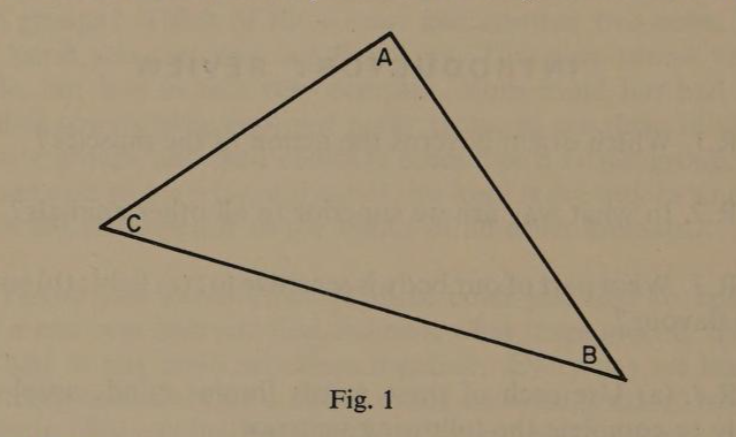

Introduction
Brain and Mind
page 11. When we read or write or speak we use our eyes, our hands, or our voices, but we could do none of these things unless we had a brain to direct and control the rest of our body. Even when we are enjoying some form of purely physical activity such as swimming or playing football, the speed and strength of our movements and the action of our muscles are all governed by that wonderful part of us which we call our brain.
2. No other animal has a brain so well developed as ours. Many creatures can jump higher, run faster, or swim better than we can. Many are bigger and stronger than we are, but not one of them can think as we can.
3. A brain is made up of a great many tiny cells, some of which are sensitive to light; others are sensitive to sound; some to flavour; while others are sensitive to odour. Special organs in different parts of our bodies pick up these sensations and pass them on to our brain. In addition, all over our bodies, nerves which are sensitive to touch send messages to our brain so that it can tell if the things we are in contact with are hard or soft; hot or cold; rough or smooth; and so on.
4. It is not in any of these ways that our brains are always superior to those of other animals, many of which can see and hear and taste and smell and feel much more acutely than we can. To understand how we are superior we must see the difference between ‘brain’ and ‘mind’.
5. Perhaps one way of explaining the difference would be to think of the brain as an organ which a scientist could take out of an animal that had died in order to examine it. But no matter how carefully he searched, he could never discover its mind. This is because the mind is an activity of the living brain.
6. Our minds have been able to develop much more than those of other animals because we learned to talk and count. Thepage 2 wonderful part about our minds is that we can think words or numbers without having to speak, and even without the thing we are thinking about being there. This is called the power of abstract thought.
Think of the word ‘book’. In your mind there will now be a picture of something which has pages and a cover binding them together. The pages may be illustrated, or they may be printed with lines of words. You may not be thinking of a particular book and certainly all of us won’t be thinking of the same book. This is because our minds have the ability to think the abstract idea ‘book’.
7. Think of three books, and three dogs, and three eggs. Do you notice how you are able to imagine the ‘three-ness’ of all those groups? Think of three cows and another two cows. In your mind you can now see five cows. This may sound very simple, but it is in fact very complex. Your mind has had to visualise cows which were not really there, to see them in two separate groups and then combine them into a larger group.
Being able to see relationships of this kind is the way in which our minds are superior to the minds of all other animals.
8. Before you could think of three cows you had to know what a cow was and you had to know what three meant. You then had to put these two ideas together. Every day we learn something new, and this is added to the knowledge stored up in our brain. We call this our memory. From this storehouse our minds are able to select and compare the things we know, and relate them in one way or another to form new ideas.
9. Our minds have an even more wonderful and exciting ability. We do not have to have real things to think about or even to use words to describe them. For example, if you see this 5 + 2 = 7 you know the relationship is true, whether we are talking about books or people or cows. More important still, if you see this n + 3 = 5 you know at once that n must stand for 2. This power of our minds to think in symbols is the basis of mathematics.
10. In this book we will consider mainly the idea of relationship. At first we will express them in words and then in symbols. There will be symbols indicating operations to be performed on the ideas. This may sound difficult and complicated. You willpage 3 find it easier than it sounds, and, in fact, you have already done this sort of thing in Section 9. Look again at the statement 5 + 2 = 7. The 5, 2, and the 7 are symbols which stand for the ideas of five things, two things, and seven things. The + sign is the symbol for the operation to be performed on the 5 and the 2, while the = sign tells us the relationship between the two smaller groups and the larger group.
Note on the reviews. So that you may know whether the ideas in this book have been explained clearly enough, each chapter ends with a set of questions. They are arranged and numbered to match the sections. If you do not understand a question you should read the related section again.
Introductory Review
R.1. Which organ governs the action of the muscles?
R.2. In what way are we superior to all other animals?
R.3. What part of our body is sensitive to: (a) light; (b) sound; (c) flavour?
R.4. (a) Use each of these words [brain] [mind] [nose] once only to complete the following sentence:
‘My …… picks up the smell of roasting meat and sends it to my ……; my …… tells me it is beef.’
(b) What animal did the meat come from?
(c) Which part of you enabled you to understand and answer the last question?
R.5. Why can the mind not be found and examined when a dead body is dissected?
R.6. (a) What were the two inventions of man which led to the full development of our minds?
(b) Show the power of your mind by choosing the odd one among the following:
[knife] [razor] [hammer] [sword]
page 4R.7. (a) What is the same about these?
[A triangle] [Traffic lights] [Blind mice]
(b) What is the same about these?
[chair legs] [a rectangle] [classroom walls] [this group]
R.8. (a) What is another name for the storehouse of ideas in our minds?
(b) How are new ideas formed in our minds?
R.9. (a) What power of our minds forms the basis of mathematics?
(b) Study this diagram and then use the three aspects of mind referred to in the last three questions to complete the statement.

Given that:
- The angles of a triangle contain 180°.
- One angle of a right-triangle contains 90°.
- Angle A is a right-angle.
- Angle B contains 40°.
Then angle C must contain …… degrees.
R.10. (a) Which is the operator in these statements:
(i) 8 − 3 = 5
(ii) 10 + 4 > 11
(b) Write down some other arithmetical operator.
(c) Which symbol in (a) (i) indicates the relationship?
(d) Which symbol tells you the relationship in this statement: 20 − 8 < 16?
(e) What do you think this symbol ‘<’ means?